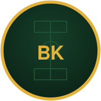

These terms cover your use of Ball Knw and the games on this site, including 7-0-0, Lineup, HeatMap, and Scoreline (together, "the site", "we", "us"). By using the site you agree to these terms.
Ball Knw is a free, browser-based hub of football games. There's no sign-up, no account and nothing to download — you open a game and play. We may add, change or remove games or features at any time without notice.
The site and its games are provided "as is", without warranty of any kind. Player names, squads, ratings and results shown in-game are stylized approximations built for gameplay, drawn from public football datasets — they are not official statistics from FIFA, any football federation, league or club, and should not be relied on as such.
Ball Knw is an independent, unofficial fan-made project. It is not affiliated with, endorsed by, or connected to FIFA, the Premier League, or any club, federation or competition referenced in-game. All trademarks, team names and competition names belong to their respective owners and are used here for descriptive, informational purposes only.
Historical squad and player data used in-game draws on public football datasets, including the Fjelstul World Cup Database, licensed under CC-BY-SA 4.0. Ratings and attributes are our own stylized approximations for gameplay and are not sourced from, or endorsed by, any official ratings provider.
You agree not to misuse the site — for example, by attempting to disrupt it, scrape it at scale, reverse engineer it for unauthorized commercial use, or use it in any way that breaks applicable law. We may restrict access for anyone who misuses the site.
If you accept cookies via the consent banner, the site may show ads served by Google AdSense and use PostHog for aggregate analytics. See our Privacy Policy for details on what this involves and how to opt out.
To the fullest extent permitted by law, we are not liable for any damages or losses arising from your use of, or inability to use, the site. The site is offered for entertainment purposes only.
We may update these terms from time to time as the site changes. Continued use of the site after a change means you accept the updated terms. Check back here for the current version.
Questions about these terms? Email thinkhiphop12@gmail.com.